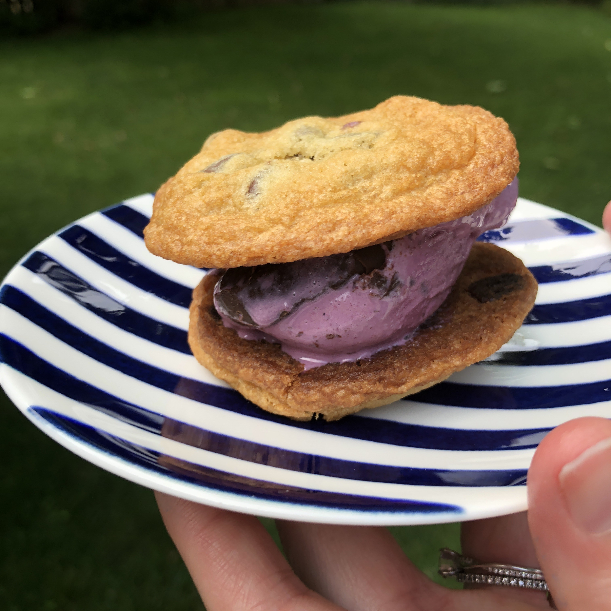

Ice Cream Sandwich

Recipe 1
Ingredients
1 1/4 cups flour
1/2 teaspoon baking soda
1/2 teaspoon salt
1/2 cup (1 stick) butter
3/8 cup sugar
3/8 cup brown sugar
1/2 teaspoon vanilla extract
1 egg
1 cup semi-sweet chocolate chips
Favorite ice cream (we like Graeters Black Raspberry Chip!)
Instructions
Preheat oven to 375°F.
Combine flour, baking soda, and salt in small bowl.
Beat butter, granulated sugar, brown sugar, and vanilla extract in large mixer bowl until creamy.
Add eggs, beating well after each addition.
Gradually beat in flour mixture.
Stir in chocolate chips.
Drop by rounded tablespoon onto ungreased baking sheets.
Bake for 9 to 11 minutes or until golden brown.
Cool on baking sheets for 2 minutes; remove to wire racks to cool completely.
Once cookies are cool, spoon a scoop of ice cream onto one cookie and stack another on top to make a sandwich! Enjoy!!
Originally from Nestle
Recipe 2
Ingredients
- 1 cup shortening
- 1 cup margarine or butter
- 2-1/2 cups all-purpose flour
- 2-1/2 cups whole wheat flour
- 2 cups packed brown sugar
- 1 cup sugar
- 1 tsp. baking soda
- 4 eggs
- 2 tsp. vanilla
- 2 12-oz. packages semisweet chocolate chips (4 cups)
- 2 cups chopped walnuts, pecans, or hazelnuts (optional)
Instructions
In a mixing bowl, beat the shortening and margarine or butter with an electric mixer on medium to high speed for 30 seconds. Add about half of the flours, the brown sugar, sugar, eggs, vanilla, and baking soda. Beat mixture until thoroughly combined. Beat in the remaining flour by hand. Stir in chocolate chips and, if desired, nuts.
Drop dough by rounded teaspoons two inches apart onto an ungreased cookie sheet. Bake in a 375˚F oven for 8 to 10 minutes or until edges are lightly browned. Remove from baking sheet and cool on foil.
For Giant Chocolate Cookies: Prepare as above, except drop dough from a ¼ cup measure or scoop about four inches apart onto cookie sheet. Bake for 11 to 13 minutes or until edges are lightly browned.
Original Source: Karen Kudija and BH&G 1989